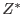

This task reads the background time-series FITS-Table (tssettabname) for the specified X and Y columns (xcol and ycol) for TIME and RATE (or COUNT), respectively, searches for the optimum background count (or rate) per bin, then if found, prints the value (refered to BGOPTCUT, hereafter) to standard output (STDOUT).
If doinsertkwds=`yes',
it also adds the two header attributes in the input time-series dataset:
BGOPTCUT for the value BGOPTCUT
and FRACTLFT
for the fraction of the number of the resultant
time bins to the original one .
.
If dooutputsntab=`yes', it also outputs the FITS file containing the table of the diagnostic information of the calculation (see Table 1), where the FITS and table names are specified in snsettabname. The further information is written in the hearder of the table extention (the first extention) of the FITS file (see Table 1).
| Keyword | Description |
| Table columns | |
| BKGRATECUT | The trial threshold for the background in unit of counts/unitTime. |
| BKGRAWCUT | The same as BKGRATECUT but in the `raw' unit; e.g., if the original is in unit of counts, `raw' unit is counts. |
| BKGRATE | The maximum rate in the data in unit of counts/unitTime that satisfies the threshold of BKGRATECUT. Therefore this value should be (very) slightly lower than the corresponding BKGRATECUT. |
| SN_RATIO | Signal-to-noise ratio; n.b., this used to be S/N up to Ver.1.1. |
| N_BIN | The number of bins that satisfy the threshold. |
| Header keywords in the Table extention | |
| BGOPTCUT | As explained (Optimum threshold of the background rate). |
| FRACTLFT | As explained in the text; NBINOPT/NBINAFTF in the following notations. |
| NBINOPT | The number of bins if BGOPTCUT is applied. |
| NBINAFTF | The number of bins after the initial filtering is applied. |
| NBINORIG | The number of the original bins. |
In practice, all the bins for Time are assumed to be the same in size, that is, duration.
This task uses a very simple minimization method; it finds the bin(s) that has the highest rate then calculate the S/N with those bins excluded, and compares with the previous S/N, namely the S/N with those bins included. This procedure continues until the newly calculated S/N is lower than the the previous value, then it prints out the previous highest rate (NOT the count), or strictly speaking the value that is slightly higher than the previous highest rate (so that the users do not have to worry about whether to use ``larger/smaller than'' or ``equal to or larger/smaller than'' in the later processing). The assumption here is the S/N as a function of  is monotonic.
The unit of the time-series can be significant. Users can specify it with tsstyle=(auto|rate|count). If it is ``auto'' (Default), this task determines tsstyle (1) according to ycol if specified, (2) or if not, this task searches for the name of the column of RATE, COUNT and COUNTS in this order and determines ycol first, then tsstyle accordingly.
Although the size of each time bin is assumed to be the same, it can be defined in the different column in the table (in the same FITS extension as the X(time) and Y(count) axes), typically FRACEXP, which can be explicitly specified with fracexpcol.
Users can also control how this task treats the FRACEXP column
with fracexpstyle=(auto|calc|threshold|none).
If fracexpstyle=none this task simply ignores FRACEXP column
and assumes all the bins have the same duration .
If fracexpstyle=threshold, then this task ignores
the bins, of which FRACEXP is smaller than the user-specified
parameter, fracexplower.
If fracexpstyle=calc, then this task takes FRACEXP
into account in the search.
If fracexpstyle=auto (Default), then this task
searches for the column fracexpcol (FRACEXP in default),
and sets fracexpstyle to be (1) ``calc'' if found, else
(2) ``none''.
.
If fracexpstyle=threshold, then this task ignores
the bins, of which FRACEXP is smaller than the user-specified
parameter, fracexplower.
If fracexpstyle=calc, then this task takes FRACEXP
into account in the search.
If fracexpstyle=auto (Default), then this task
searches for the column fracexpcol (FRACEXP in default),
and sets fracexpstyle to be (1) ``calc'' if found, else
(2) ``none''.
Users can also specify the start and end times to consider in the search for the optimum background level with the parameters of starttime and endtime.
Users can also specify the bins to be ignored if the count (or rate) of the bin is lower than the value, lowercutoffcount. Note that the bins with negative count (or rate) or with undefined value are always ignored.
Users can also specify the ratio of the minimum time to be left where the further search stops, with mintimeratio (0.05 in default). Namely if the search for the optimum background cuts continues to the extent smaller than the fraction of mintimeratio (5% in default) in the exposure to the original exposure after all the other filtering is performed is left to be valid (in other words if over 95% in default of the exposure is regarded as high-background area), then this task stops further search for the optimum background level and instead raises an error (noThresholdFound).
Finally, if the large number of bins have the smallest and identical count, then chances are the maximum S/N is achieved when only those bins are used. For example, it is the case for the perfectly uniform time-series (although it must be an extremely rare case, if ever, with the real data). In that case, this task either (1) raises an error (noThresholdFound) preceded by a warning (recommendedLowerMinTimeRatio), or (2) returns the value slightly higher than the particular value preceded by a warning (regardLowestBinsAsOptimum) if all the time-bins are examined (due to a very small mintimeratio given) and if those time-bins occupy more than a third of the number of entire time-bins.